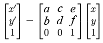

Prilagodjene transformacije u Canvas-u
U HTML5 Canvas-u se prilagođene transformacije postižu pozivom metode transform().
Ova metoda prihvata 6 argumenta 3 x 3 matricu prema sledećoj konvenciji:

U sledećem primeru transliramo pravougaonik za polovinu dužine i polovinu visine elementa Canvas putem metode transform().
<canvas id="myCanvas" width="578" height="200"></canvas>
<script>
var canvas = document.getElementById('myCanvas');
var context = canvas.getContext('2d');
var rectWidth = 150;
var rectHeight = 75;
// 1 0 tx
// 0 1 ty
// 0 0 1
var tx = canvas.width / 2;
var ty = canvas.height / 2;
context.transform(1, 0, 0, 1, tx, ty);
context.fillStyle = 'blue';
context.fillRect(rectWidth / -2, rectHeight / -2, rectWidth, rectHeight);
</script>